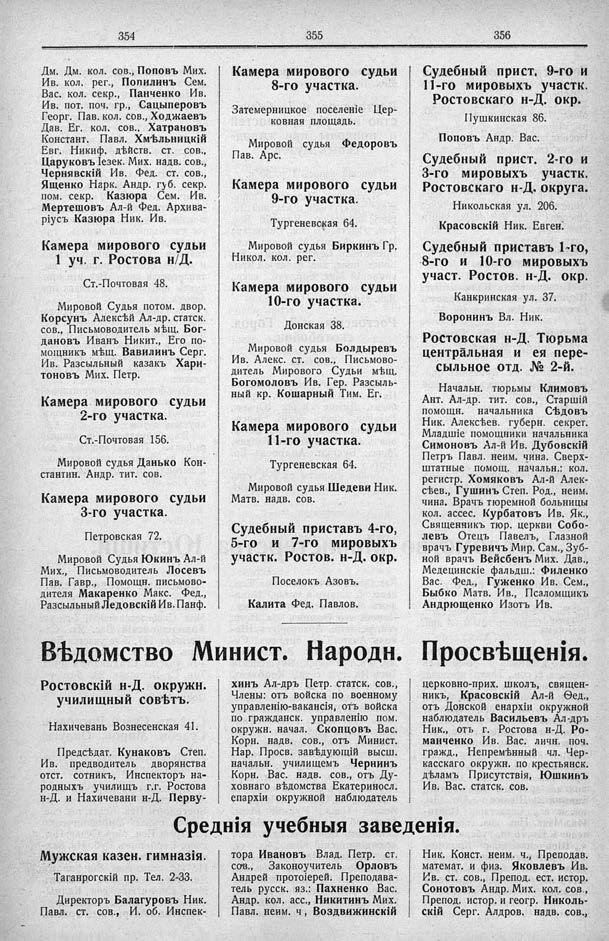

Лист источника 250
Скан

Распознанный текст
354
355
356
Дм. Дм. кол. сов., Поповъ Мих.
Ив. кол. рег., Попилинъ Сем.
Вас. кол. секр., Панченко Ив.
Ив. пот. поч. гр., Сацыперовъ
Георг. Пав. кол. сов., Ходжаевъ
Дав. Ег. кол. сов., Хатрановъ
Констант. Павл. Хмѣльницкій
Евг. Никиф. дѣйств. ст. сов.,
Царуковъ Іезек. Мих. надв. сов.,
Чернявскій Ив. Фед. ст. сов.,
Ященко Нарк. Андр. губ. секр.
пом. секр. Казюра Сем. Ив.
Мертешовъ Ал-й Фед. Архива-
ріусъ Казюра Ник. Ив.
Камера мирового судьи
1 уч. г. Ростова н/Д.
Ст.-Почтовая 48.
Мировой Судья потом. двор.
Корсунъ Алексѣй Ал-др. статск.
сов., Письмоводитель мѣщ. Бог-
дановъ Иванъ Никит., Его по-
мощникъ мѣщ. Вавилинъ Серг.
Ив. Разсыльный казакъ Хари-
тоновъ Мих. Петр.
Камера мирового судьи
2-го участка.
Ст.-Почтовая 156.
Мировой судья Данько Кон-
стантин. Андр. тит. сов.
Камера мирового судьи
3-го участка.
Петровская 72.
Мировой Судья Юкинъ Ал-й
Мих., Письмоводитель Лосевъ
Пав. Гавр., Помощн. письмово-
дителя Макаренко Макс. Фед.,
Разсыльный Ледовскій Ив. Панф.
Камера мирового судьи
8-го участка.
Затемерницкое поселеніе Цер-
ковная площадь.
Мировой судья Федоровъ
Пав. Арс.
Камера мирового судьи
9-го участка.
Тургеневская 64.
Мировой судья Биркинъ Гр.
Никол. кол. рег.
Камера мирового судьи
10-го участка.
Донская 38.
Мировой судья Болдыревъ
Ив. Алекс. ст. сов., Письмово-
дитель Мирового Судьи мѣщ.
Богомоловъ Ив. Гер. Разсыль-
ный кр. Кошарный Тим. Ег.
Камера мирового судьи
11-го участка.
Тургеневская 64.
Мировой судья Шедеви Ник.
Матв. надв. сов.
Судебный приставъ 4-го,
5-го и 7-го мировыхъ
участк. Ростов. н-Д. окр.
Поселокъ Азовъ.
Калита Фед. Павлов.
Судебный прист. 9-го и
11-го мировыхъ участк.
Ростовскаго н-Д. окр.
Пушкинская 86.
Поповъ Андр. Вас.
Судебный прист. 2-го и
3-го мировыхъ участк.
Ростовскаго н-Д. округа.
Никольская ул. 206.
Красовскій Ник. Евген.
Судебный приставъ 1-го,
8-го и 10-го мировыхъ
участ. Ростов. н-Д. окр.
Канкринская ул. 37.
Воронинъ Вл. Ник.
Ростовская н-Д. Тюрьма
центральная и ея пере-
сыльное отд. № 2-й.
Начальн. тюрьмы Климовъ
Ант. Ал-др. тит. сов., Старшій
помощн. начальника Сѣдовъ
Ник. Алексѣев. губерн. секрет.
Младшіе помощники начальника
Симоновъ Ал-й Ив. Дубовскій
Петръ Павл. неим. чина. Сверх-
штатные помощ. начальн.: кол.
регистр. Хомяковъ Ал-й Алек-
сѣев., Гушинъ Степ. Род., неим.
чина. Врачъ тюремной больницы
кол. ассес. Курбатовъ Ив. Як.,
Священникъ тюр. церкви Собо-
левъ Отецъ Павелъ, Глазной
врачъ Гуревичъ Мир. Сам., Зуб-
ной врачъ Вейсбенъ Мих. Дав.,
Медецинскіе фельдш.: Филенко
Вас. Фед., Гуженко Ив. Сем.,
Быбко Матв. Ив., Псаломщикъ
Андрющенко Изотъ Ив.
Вѣдомство Минист. Народн. Просвѣщенія.
Ростовскій н-Д. окружн.
училищный совѣтъ.
Нахичевань Вознесенская 41.
Предсѣдат. Кунаковъ Степ.
Ив. предводитель дворянства
отст. сотникъ, Инспекторъ на-
родныхъ училищъ г.г. Ростова
н-Д. и Нахичевани н-Д. Перву-
хинъ Ал-дръ Петр. статск. сов.,
Члены: отъ войска по военному
управленію-вакансія, отъ войска
по гражданск. управленію пом.
окружн. начал. Скопцовъ Вас.
Корн. надв. сов., отъ Минист.
Нар. Просв. завѣдующій высш.
начальн. училищемъ Чернинъ
Корн. Вас. надв. сов., отъ Ду-
ховнаго вѣдомства Екатериносл.
епархіи окружной наблюдатель
церковно-прих. школъ, священ-
никъ, Красовскій Ал-й Ѳед.,
отъ Донской епархіи окружной
наблюдатель Васильевъ Ал-дръ
Ник., отъ г. Ростова н-Д. Ро-
манченко Ив. Вас. личн. поч.
гражд., Непремѣнный чл. Чер-
касскаго окружн. по крестьянск.
дѣламъ Присутствія, Юшкинъ
Ив. Вас. статск. сов.
Среднія учебныя заведенія.
Мужская казен. гимназія.
Таганрогскій пр. Тел. 2-33.
Директоръ Балагуровъ Ник.
Павл. ст. сов., И. об. Инспек-
тора Ивановъ Влад. Петр. ст.
сов., Законоучитель Орловъ
Андрей протоіерей. Преподава-
тель русск. яз.: Пахненко Вас.
Андр. кол. асс., Никитинъ Мих.
Павл. неим. ч, Воздвижинскій
Ник. Конст. неим. ч., Преподав.
математ. и физ. Яковлевъ Ив.
Ив. ст. сов., Препод. ест. истор.
Сонотовъ Андр. Мих. кол. сов.,
Препод. истор. и геогр. Николь-
скій Серг. Алдров. надв. сов.,